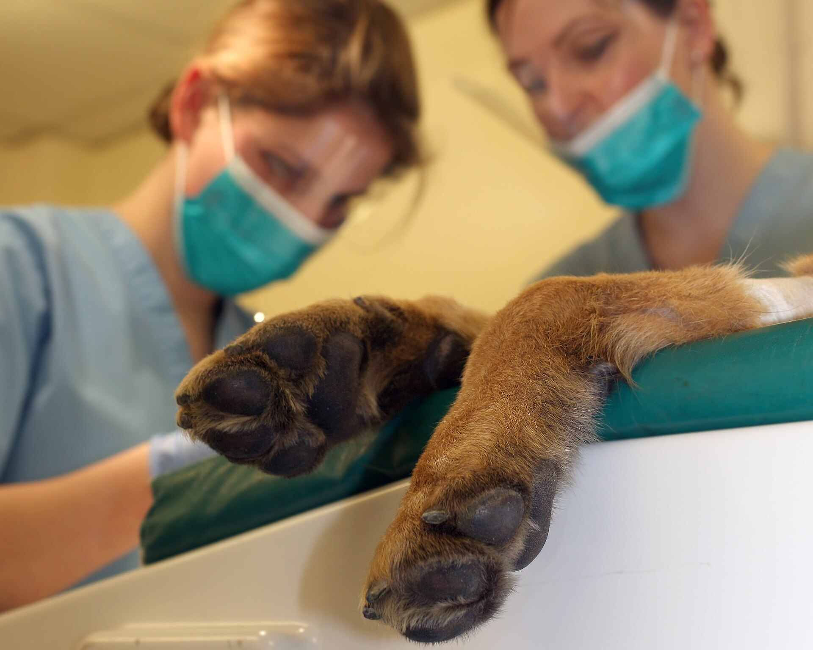
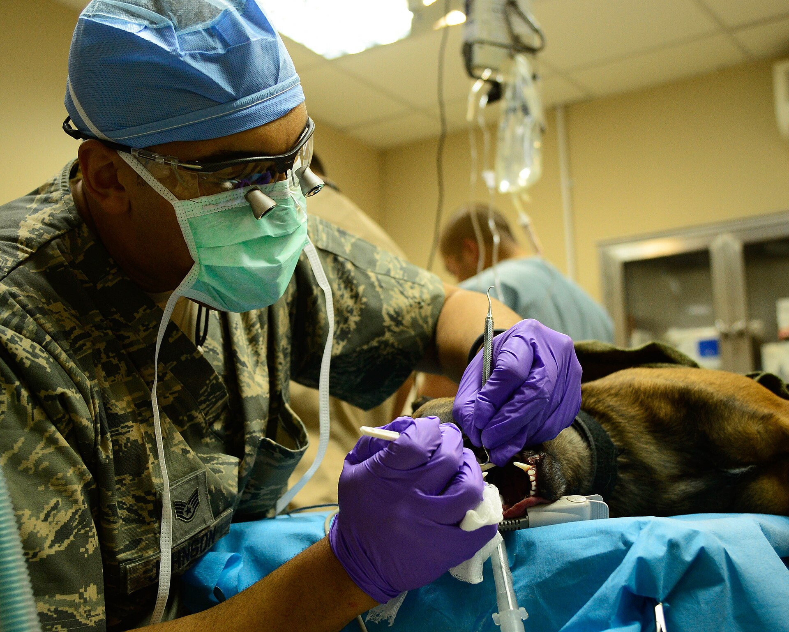
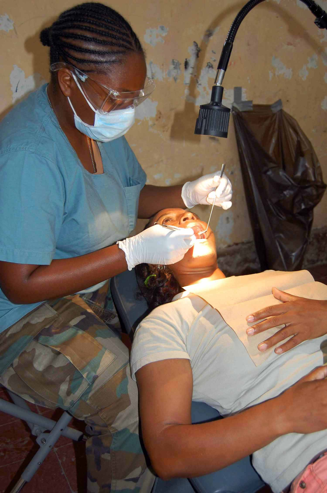

Ultraljudsscaler
Lossar tandsten både över och under tandköttskanten med vibrationer och kylvatten. Vi arbetar i sektioner om 5 till 10 minuter per sida.
7 av 10 hundar över tre år har tandsten, och de flesta ägare märker det först när andedräkten ändras. Vi tar bort tandstenen med ultraljudsscaler i narkos, röntgar hela munnen och polerar rent längs tandköttskanten. Besöket tar 60 minuter, och du får med dig en skriftlig bedömning av varje tand.
Symtom
Katter är svårast att läsa. En katt med inflammerad tandrot kan äta som vanligt i flera månader och tvätta sig som förut, eftersom de visar svaghet först när det är absolut nödvändigt. Har du lyft på läppen och sett en mörk rand längs tandköttet är det rimligt att boka en undersökning innan nästa årskontroll, i stället för att vänta på att djuret ska sluta äta.

Priser
Priset ligger fast och narkosen ingår i alla fyra behandlingarna. Behöver planen ändras under ingreppet ringer vi dig innan vi går vidare.
| Åtgärd | Omfattning | Pris |
|---|---|---|
| Tandstenborttagning med ultraljudsscaler | Narkos, tandsten över och under tandköttskanten, tandröntgen och polering i samma narkos. Tar 60 minuter. | 4 800 kr |
| Tandröntgen | Sex bilder av hela munnen, bedömning av veterinär och skriftligt svar samma dag. | 1 200 kr |
| Extraktion av en tand | Kirurgiskt ingrepp i narkos, sutur och smärtlindring för 3 dagar. | 1 500 kr |
| Rotbehandling | Inflammerad rot rensas och fylls, med kontroll av tanden efter 6 månader. | 5 400 kr |
Raden Tandröntgen gäller när bilderna tas vid ett eget besök. Görs de i samma narkos som en tandstenborttagning ligger de i de 4 800 kronorna. Narkosmedlet räknas efter vikt, med 10 till 18 kr per kilo ovanpå priset, och för hundar över 25 kilo lägger vi upp en egen kostnadsuppskattning före ingreppet. Räkna på ditt djurs vikt i kalkylen på prissidan.
Besöket
Fyra steg från mottagningen till hemgång. Djuret är hos oss mellan 09.00 och 15.00 och kan hämtas samma dag.
Veterinären lyfter på läppen, räknar tänderna och graderar tandstenen från noll till tre. En hund har 42 tänder, en katt 30, och vi skriver ner status för vart och ett av dem. Tio minuter in i besöket vet du omfattningen.
Bilderna tas när djuret sover och tar under fem minuter. Vi ser rötter, tandben och tandköttsfickor som inte går att bedöma med ögat. Visar röntgen något som ändrar planen ringer vi dig medan djuret ligger kvar på bordet.
Ultraljudsscalern lossar tandstenen längs tandköttskanten, en tand i taget. Sedan polerar vi ytan slät. Sitter en tand löst eller är roten inflammerad drar vi den eller rotbehandlar innan djuret vaknar. Arbetet tar 45 till 60 minuter.
Hunden vaknar inom 30 minuter och får åka hem efter 2 timmars vila. Du får smärtlindring för 3 dagar, en skriftlig tandstatus och en tid för återbesök efter 10 till 14 dagar om något drogs.

Ungefär två tredjedelar av tanden ligger under tandköttet, där varken du eller vi ser den. En tand som ser hel ut ovanför kanten kan ha en brusten rot, en cysta i tandbenet eller en ficka som är sex millimeter djup. Därför är röntgen en fast del av varje tandbehandling hos oss, inte en tilläggstjänst.
Bilderna tas med en digital sensor inne i munnen, sex stycken för att täcka båda sidorna fram och bak. De sparas i journalen och du får dem mejlade samma kväll, tillsammans med tandstatusen. Vid nästa kontroll jämför vi dagsläget med de gamla bilderna, vilket gör det lätt att se om en tandköttsficka växer. Klinikens röntgenutrustning och hur en röntgenundersökning går till beskrivs på sidan om röntgen.
Siffrorna vi letar efter är tandbenets höjd runt varje rot och hur mycket tandkött som lossnat från tanden. Tappar en hund mer än en millimeter tandben per år går vi oftare in och rengör, och du får ett hemprogram med tandborstning varje dag i stället för tre gånger i veckan.
En mörk fläck vid tandköttet kan vara tandsten eller en tand som redan är död. Vi kan inte skilja dem åt genom att titta, bara genom att röntga.
Därför får du aldrig beskedet att en tand ska dras förrän bilderna är granskade. Är roten hel och tandbenet runt omkring friskt behåller vi tanden, även om kronan är skadad.
Det vi gör i tandrummet håller i månader, inte år. Utan rengöring hemma är tandstenen tillbaka inom 6 till 12 månader, och då har tandköttet dragit sig tillbaka en bit till. Rutinen behöver inte ta lång tid, men den behöver vara återkommande.
Börja med korta pass och belöning direkt efteråt, så att tandborsten blir något djuret förknippar med godis. Har hunden eller katten redan röda tandköttsränder är det bättre att boka en kontroll först och börja borsta när munnen är rengjord och smärtfri.

Utrustning
Allt står i samma rum, så ett ingrepp kan genomföras i ett svep utan att djuret flyttas. De sex delarna nedan används vid varje tandbehandling. Fler delar av klinikens utrustning hittar du i tjänsteöversikten.
Lossar tandsten både över och under tandköttskanten med vibrationer och kylvatten. Vi arbetar i sektioner om 5 till 10 minuter per sida.
Roterande kopp med pimpstenspasta jämnar ut mikroskopiska repor efter scalern. En slät yta gör att ny tandsten fäster långsammare.
Digital sensor inne i munnen ger sex bilder på under fem minuter. Bilderna sparas i journalen och kan jämföras vid nästa besök.
Syremättnad, andningsfrekvens och hjärtljud kontrolleras var femte minut under hela ingreppet, av en djursjukskötare som bara har den uppgiften.
Liten spegel på skaft som visar tandköttsfickor och sprickor bakom kinden, där blicken inte når. Används innan varje extraktion.
Håller kroppstemperaturen nära 38 grader under narkosen. Ett djur som håller värmen vaknar snabbare och mår mindre illa efteråt.
Frågor och svar
Fem frågor kommer igen varje vecka, i telefon och i undersökningsrummet. Svaren här är desamma som veterinären ger.
Ja, om tandstenen sitter under tandköttskanten. Ett vaket djur rör på tungan och huvudet, och rengöringen måste komma åt fickorna mellan tand och tandkött, vilket är 3 till 6 millimeter ner. Narkosen varar 30 till 60 minuter och läggs med andningsmask, smärtlindring och kontinuerlig övervakning. Hundar över åtta år, katter över tio år och djur med känt hjärtfel tar vi ett blodprov på i förväg.
Nej, och det gäller även de skrapor som säljs för hemmabruk. En metallskrapa repar emaljen, och reporna gör att ny tandsten fäster snabbare än förut. Du kommer heller aldrig åt den tandsten som sitter under tandköttet, och det är den som driver tandlossningen. Vill du göra något hemma är tandborstning och godkända tuggprodukter rätt väg.
Kontroll var tolfte månad räcker för de flesta hundar, och 7 av 10 hundar som passerat tre år har tandsten som behöver tas bort vid något tillfälle. Katter över fem år har ofta tandköttsinflammation utan att det syns hemma, så där tar vi röntgen tidigare. Små raser med trång mun behöver hjälp oftare än stora.
Nej. Torrfoder ger en viss mekanisk rengöring på kindtändernas toppar, men kulan krossas mellan tänderna och når inte ner mot tandköttet där problemet börjar. Tandvårdsfoder med anpassad kulstorlek gör mer nytta, och vi kan rekommendera ett sådant vid behov. Bäst effekt får du om kosten kombineras med borstning tre gånger i veckan eller oftare.
Vi mäter rörligheten och röntgar roten. En tand som redan rör sig brukar inte bli fast igen, eftersom tandbenet runt den redan är nedbrutet. Då drar vi den, oftast i samma narkos, för 1 500 kr inklusive sutur och smärtlindring. Vi ringer innan vi tar fler tänder än planerat. Läkningen tar 10 till 14 dagar, och de flesta djur äter mjukt igen redan samma kväll.
Efteråt
Utskrivningen tar 15 minuter och medicinerna följer med hem. Munnen är öm i ett par dygn, mest efter en tanddragning, och de flesta djur äter normalt igen efter tre dagar.
Första kvällen serverar du mjuk mat i rumstemperatur, till exempel blötfoder eller uppblött torrfoder. Undvik hårda tuggben och ben i två veckor efter en tanddragning, så att suturerna får läka i fred. Vattenskålen står framme hela dygnet.
Smärtlindringen ges morgon och kväll i 3 dagar, och du behöver inte väcka djuret för att ge medicinen. Lite svullnad över kinden dag två är normal och går ner av sig själv. Är djuret piggt och äter dagen efter får det röra sig som vanligt, men håll kopplet kort i några dagar.
Blödning som inte slutar efter 10 minuters tryck, eller färskt blod i vattenskålen dagen efter ingreppet.
Djuret vill inte äta alls efter 2 dygn, eller dricker sämre än vanligt. Är kinden hård och varm, eller luktar munnen illa trots rengöring, vill vi se tanden samma dag.
Lämna djuret på morgonen och hämta det samma dag efter 15.00. Ta med namnet på eventuell torrfodersort och den medicin djuret står på, så går bedömningen snabbare.